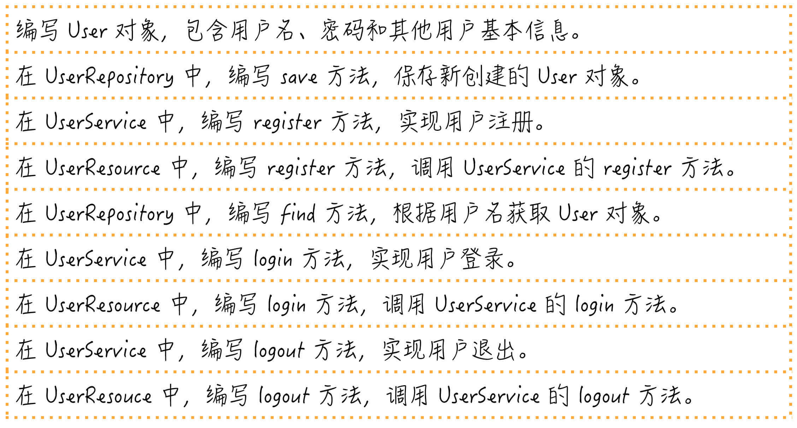
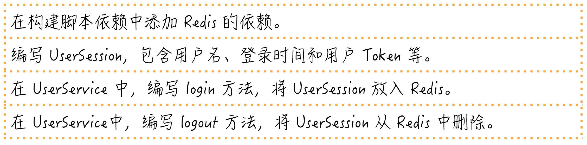
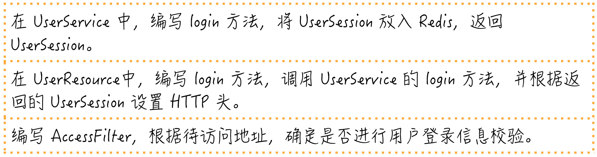
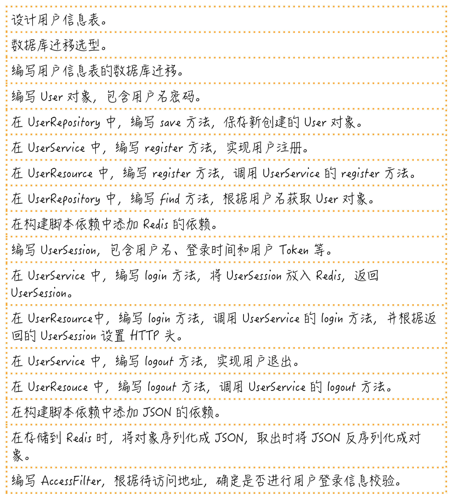

- 00 开篇词 程序员解决的问题，大多不是程序问题.md
- 01 10x程序员是如何思考的？.md
- 02 以终为始：如何让你的努力不白费？.md
- 03 DoD的价值：你完成了工作，为什么他们还不满意？.md
- 04 接到需求任务，你要先做哪件事？.md
- 05 持续集成：集成本身就是写代码的一个环节.md
- 06 精益创业：产品经理不靠谱，你该怎么办？.md
- 07 解决了很多技术问题，为什么你依然在“坑”里？.md
- 08 为什么说做事之前要先进行推演？.md
- 09 你的工作可以用数字衡量吗？.md
- 10 迭代0_ 启动开发之前，你应该准备什么？.md
- 11 向埃隆·马斯克学习任务分解.md
- 12 测试也是程序员的事吗？.md
- 13 先写测试，就是测试驱动开发吗？.md
- 14 大师级程序员的工作秘笈.md
- 15 一起练习：手把手带你分解任务.md
- 16 为什么你的测试不够好？.md
- 17 程序员也可以“砍”需求吗？.md
- 18 需求管理：太多人给你安排任务，怎么办？.md
- 19 如何用最小的代价做产品？.md
- 20 为什么世界和你的理解不一样？.md
- 21 你的代码为谁而写？.md
- 22 轻量级沟通：你总是在开会吗？.md
- 23 可视化：一种更为直观的沟通方式.md
- 24 快速反馈：为什么你们公司总是做不好持续集成？.md
- 25 开发中的问题一再出现，应该怎么办？.md
- 26 作为程序员，你也应该聆听用户声音.md
- 27 尽早暴露问题： 为什么被指责的总是你？.md
- 28 结构化：写文档也是一种学习方式.md
- 29 “懒惰”应该是所有程序员的骄傲.md
- 30 一个好的项目自动化应该是什么样子的？.md
- 31 程序员怎么学习运维知识？.md
- 32 持续交付：有持续集成就够了吗？.md
- 33 如何做好验收测试？.md
- 34 你的代码是怎么变混乱的？.md
- 35 总是在说MVC分层架构，但你真的理解分层吗？.md
- 36 为什么总有人觉得5万块钱可以做一个淘宝？.md
- 37 先做好DDD再谈微服务吧，那只是一种部署形式.md
- 38 新入职一家公司，怎么快速进入工作状态？.md
- 39 面对遗留系统，你应该这样做.md
- 40 我们应该如何保持竞争力？.md
- 划重点 “综合运用”主题内容的全盘回顾.md
- 划重点 “自动化”主题的重点内容回顾汇总.md
- 划重点 一次关于“沟通反馈”主题内容的复盘.md
- 划重点 关于“以终为始”，你要记住的9句话.md
- 划重点 关于“任务分解”，你要重点掌握哪些事？.md
- 加餐 你真的了解重构吗？.md
- 总复习 重新审视“最佳实践”.md
- 总复习 重新来“看书”.md
- 答疑解惑 如何分解一个你不了解的技术任务？.md
- 答疑解惑 如何在实际工作中推行新观念？.md
- 答疑解惑 如何管理你的上级？.md
- 答疑解惑 持续集成、持续交付，然后呢？.md
- 答疑解惑 持续集成，一条贯穿诸多实践的主线.md
- 结束语 少做事，才能更有效地工作.md
15 一起练习：手把手带你分解任务
你好，我是郑晔。
前面在讨论 TDD 的时候，我们说任务分解是 TDD 的关键。但这依然是一种感性上的认识。今天，我们就来用一个更加具体的例子，让你看看任务分解到底可以做到什么程度。
这个例子就是最简单的用户登录。需求很简单，用户通过用户名密码登录。
我相信，实现这个功能对大家来说并不困难，估计在我给出这个题目的时候，很多人脑子里已经开始写代码了。今天主要就是为了带着大家体验一下任务分解的过程，看看怎样将一个待实现的需求一步步拆细，变成一个个具体可执行的任务。
要完成这个需求，最基本的任务是用户通过输入用户名和密码登录。
用户名和密码登录这个任务很简单，但我们在第一部分讲过沙盘推演，只要推演一下便不难发现，这不是一个完整的需求。
用户名和密码是哪来的呢？它们可能是用户设置的，也可能是由系统管理员设置的。这里我们就把它们简单设定成由用户设定。另外，有用户登录，一般情况下，还会有一个退出的功能。好了，这才是一个简单而完整的需求。我们就不做进一步的需求扩展。
所以，我们要完成的需求列表是下面这样的。
- 假设我们就是拿到这个需求列表的程序员，要进行开发。我们先要分析一下要做的事情有哪些，也就是任务分解。到这里，你可以先暂停一会，尝试自己分解任务，之后，再来对比我后面给出的分解结果，看看差异有多少。
好，我们继续。
我们先来决定一下技术方案，就用最简单的方式实现，在数据库里建一张表保存用户信息。一旦牵扯到数据库表，就会涉及到数据库迁移，所以，有了下面的任务。
- 这时，需要确定这两个任务自己是否知道怎么做。设计表，一般熟悉 SQL 的人都知道怎么做。数据库迁移，可能要牵扯到技术选型，不同的数据库迁移工具，写法上略有差别，我们就把还不完全明确的内容加到任务清单里。
- 数据库的内容准备好了，接下来，就轮到编写代码的准备上了。我们准备用常见的 REST 服务对外提供访问。这里就采用最常规的三层技术架构，所以，一般要编写下面几项内容。
- 领域对象，这里就是用户。
- 数据访问层，在不同的项目里面叫法不一，有人从 J2EE 年代继承下来叫 DAO（数据访问对象，Data Access Obejct），有人跟着 Mybatis 叫 mapper，我现在更倾向于使用领域驱动设计的术语，叫 repository。
- 服务层，提供对外的应用服务，完成业务处理。
- 资源层，提供 API 接口，包括外部请求的合法性检查。
根据这个结构，就可以进一步拆解我们的开发任务了。

不知道你有没有注意到，我的任务清单上列任务的顺序，是按照一个需求完整实现的过程。
比如，第一部分就是一个完整的用户注册过程，先写 User，然后是 UserRepository 的 save 方法，接着是 UserService 的 register 方法，最后是 UserResource 的 register 方法。等这个需求开发完了，才是 login 和 logout。
很多人可能更习惯一个类一个类的写，我要说，最好按照一个需求、一个需求的过程走，这样，任务是可以随时停下来的。
比如，同样是只有一半的时间，我至少交付了一个完整的注册过程，而按照类写的方法，结果是一个需求都没完成。这只是两种不同的安排任务的顺序，我更支持按照需求的方式。
我们继续讨论任务分解。任务分解到这里，需要看一下这几个任务有哪个不好实现。register 只是一个在数据库中存储对象的过程，没问题，但 login 和 logout 呢？
考虑到我们在做的是一个 REST 服务，这个服务可能是分布到多台机器上，请求到任何一台都能提供同样的服务，我们需要把登录信息共享出去。
这里我们就采用最常见的解决方案：用 Redis 共享数据。登录成功的话，就需要把用户的 Session 信息放到 Redis 里面，退出的话，就是删除 Session 信息。在我们的任务列表里，并没有出现 Session，所以，需要引入 Session 的概念。任务调整如下。

如果采用 Redis，我们还需要决定一下在 Redis 里存储对象的方式，我们可以用原生的Java序列化，但一般在开发中，我们会选择一个文本化的方式，这样维护起来更容易。这里选择常见的 JSON，所以，任务就又增加了两项。
至此，最基本的登录退出功能已经实现了，但我们需要问一个问题，这就够了吗？之所以要登录，通常是要限定用户访问一些资源，所以，我们还需要一些访问控制的能力。
简单的做法就是加入一个 filter，在请求到达真正的资源代码之前先做一层过滤，在这个 filter 里面，如果待访问的地址是需要登录访问的，我们就看看用户是否已经登录，现在一般的做法是用一个 Token，这个 Token 一般会从 HTTP 头里取出来。但这个 Token 是什么时候放进去的呢？答案显然是登录的时候。所以，我们继续调整任务列表。

至此，我们已经比较完整地实现了一个用户登录功能。当然，要在真实项目中应用，需求还是可以继续扩展的。比如：用户 Session 过期、用户名密码格式校验、密码加密保存以及刷新用户 Token等等。
这里主要还是为了说明任务分解，相信如果需求继续扩展，根据上面的讨论，你是有能力进行后续分解的。
来看一下分解好的任务清单，你也可以拿出来自己的任务清单对比一下，看看差别有多大。

- 首先要说明的是，任务分解没有一个绝对的标准答案，分解的结果根据个人技术能力的不同，差异也会很大。检验每个任务项是否拆分到位，就是看你是否知道它应该怎么做了。不过，即便你技术能力已经很强了，我依然建议你把任务分解到很细，观其大略人人行，细致入微见本事。
也许你会问我，我在写代码的时候，也会这么一项一项地把所有任务都写下来吗？实话说，我不会。因为任务分解我在之前已经训练过无数次，已经习惯怎么一步一步地把事情做完。换句话说，任务清单虽然我没写下来，但已经在我脑子里了。
不过，我会把想到的，但容易忽略的细节写下来，因为任务清单的主要作用是备忘录。一般情况下，主流程我们不会遗漏，但各种细节常常会遗漏，所以，想到了还是要记下来。
另外，对比我们在分解过程中的顺序，你会看到这个完整任务清单的顺序是调整过的，你可以按照这个列表中的内容一项一项地做，调整最基本的标准是，按照这些任务的依赖关系以及前面提到的“完整地实现一个需求”的原则。
最后，我要特别强调一点，所有分解出来的任务，都是独立的。也就是说，每做完一个任务，代码都是可以提交的。只有这样，我们才可能做到真正意义上的小步提交。
如果今天的内容你只能记住一件事，那请记住：按照完整实现一个需求的顺序去安排分解出来的任务。
最后，我想请你分享一下，你的任务清单和我的任务清单有哪些差异呢？欢迎在留言区写下你的想法。
感谢阅读，如果你觉得这篇文章对你有帮助的话，也欢迎把它分享给你的朋友。
© 2019 - 2023 Liangliang Lee. Powered by gin and hexo-theme-book.